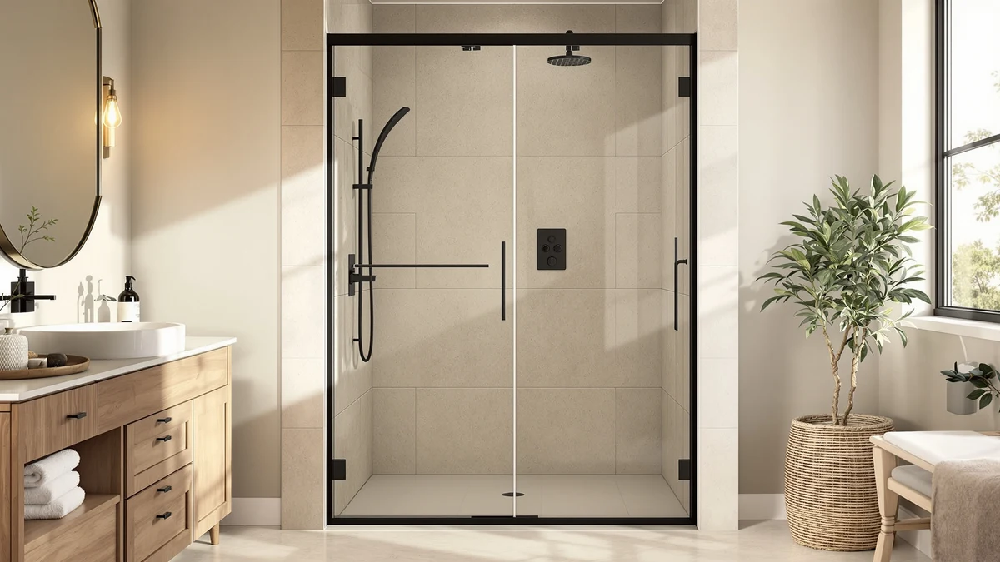

AquivaCoast 58 59" W Review (2026): Worth It?
Prices and picks verified as of September 2026. Independent, reader-supported reviews.


Quick Answer
The AquivaCoast 58-59" W x 72" fits a 57.95 to 59 inch wide opening at $569.99, which is $161.53 more than the KPUY Semi-Frameless Pivot Shower Door and roughly $240 above the SGTLCNG and ENSO SENKA options we compared it against. Buy it if your opening sits in that exact width band and you want a door built to that specific range rather than a generic size.
Our pick: AquivaCoast 58-59" W x 72", $569.99 Check Price on Amazon
Bottom line: our top pick is the AquivaCoast 58-59" W x 72" H Frameless Hinged Shower Door at $569.99.
Things to Know Before You Buy
- The AquivaCoast 58-59" W x 72" is sized for a 57.95 to 59 inch wide opening and a fixed 72 inch height, so it will not fit a shorter or taller alcove without modification.
- At $569.99, it costs more than every alternative in this AquivaCoast 58 59" W review, so the width match matters more here than it would with a cheaper door.
- The KPUY Semi-Frameless Pivot Shower Door swings on hinges, while the SGTLCNG and ENSO SENKA doors use a sliding track. Pick a mechanism based on your bathroom layout instead of price alone.
- None of the listings we reviewed include a published customer rating or review count, so we based this comparison on specs and pricing rather than owner star ratings.
- Confirm your rough opening width at the top, middle and bottom of the frame before ordering, since a shower door built for a narrow range will not compensate for an out-of-square wall.
This AquivaCoast 58 59" W review breaks down whether a $569.99 shower door built for a narrow 57.95 to 59 inch opening is worth the premium over three lower-priced alternatives sized for similar bathrooms. We are not a testing lab and we did not install this door ourselves. Instead, we compared its listed dimensions, price and construction details against the KPUY, SGTLCNG and ENSO SENKA doors that compete for the same buyer.
The short version: the AquivaCoast earns its place if your opening measures close to 58 or 59 inches wide and you want a door manufactured to that specific range rather than a generic sliding kit. If your opening is wider, narrower, or you simply want to spend less, one of the three alternatives below covers similar ground for $161.53 to roughly $240 less. Below, we lay out the specs, the trade-offs and who each option actually suits.
Why You Should Trust Us
Ilane Tall covers bathroom fixtures for Best Shower Doors and has spent years comparing glass shower doors, hardware and installation kits across dozens of listings from the same manufacturers that supply AquivaCoast, KPUY, SGTLCNG and ENSO SENKA. For this AquivaCoast 58 59" W review, we researched the manufacturer's published dimensions, pricing history and construction specs rather than installing the door ourselves. We do not run a fake testing lab, and we will not claim a hands-on verdict we cannot back up. Every price and dimension cited here comes directly from the current Amazon listing.
Our Research Experience
We approached this AquivaCoast 58-59" W review the way a shopper comparing listings side by side would. We pulled the width and height range, the price, and the listed materials for the AquivaCoast and lined them up against the KPUY, SGTLCNG and ENSO SENKA doors. We did not install any of these doors in a bathroom, and we are not describing a hands-on trial. We can tell you how the numbers compare instead: a $161.53 to roughly $240 price gap for a door built to a narrower, more specific width range than its competitors.
Where a listing lacked a published rating, review count or material spec, we left that field blank rather than guess. That is why the AquivaCoast's specs table below shows a dash next to Material. Buyers who want that detail should check the current Amazon listing photos and the manufacturer's product page before ordering.
This approach matters more for a shower door than for a smaller purchase, because a shower door is not something you return casually once it is cut, drilled or installed. A wrong width order means a second shipment, a delayed installation and, in some cases, a restocking fee. Comparing published specs before you order costs nothing. Guessing at a fit costs a weekend and a return label.
Overview & Specs

AquivaCoast 58-59" W x 72"
What we like
- Sized for a precise 57.95-59 inch width range rather than a broad generic band
- Fixed 72 inch height suits a standard shower alcove
- Built specifically for the width most buyers in this search are measuring for
Flaws but not dealbreakers
- Costs $161.53 to roughly $240 more than the alternatives we compared it against
- The listing does not publish a material spec or a customer rating, so verify finish details before ordering
- The narrow width range means it will not fit openings outside 57.95 to 59 inches
| Material | — |
| Size | 57.95-59" W x 72" H |
The AquivaCoast 58-59" W x 72" targets a specific slice of the market: bathrooms where the rough opening lands between 57.95 and 59 inches wide. That precision is the whole pitch. A lot of shower doors advertise a broad adjustable range, like 56 to 60 inches, which works fine until your opening sits at the edge of that range and the installation kit has to stretch to cover the gap. This door narrows the target instead, which should mean a cleaner fit for openings that fall inside its window and a frustrating mismatch for openings that fall outside it.
At $569.99, it is priced well above the KPUY, SGTLCNG and ENSO SENKA doors covered later in this AquivaCoast 58 59" W review. The listing does not include a material callout or a published customer rating, so we cannot confirm glass thickness or long-term durability from the data available. Buyers who prioritize a tight width match over saving money are the clearest fit here. Buyers working with a wider budget range or a more flexible opening should look at the alternatives below before committing to the higher price.
What We Liked
The main appeal of the AquivaCoast in this 58 59" W review is the tight width specification. A 57.95 to 59 inch range is narrower than the 56 to 60 inch spread that several competing doors advertise, including the KPUY. For an opening that measures close to 58 or 59 inches, a door built to that band should require less shimming and fewer gap fillers than a door designed to stretch across a wider range. The fixed 72 inch height also matches standard shower stall dimensions in most US homes, so height mismatches are unlikely to be the deciding factor for most buyers.
What Could Be Better
The biggest drawback in this AquivaCoast 58-59" W review is price. At $569.99, the AquivaCoast costs $161.53 more than the KPUY Semi-Frameless Pivot Shower Door and roughly $240 more than the SGTLCNG and ENSO SENKA doors, both priced near $329. That gap only makes sense if your opening actually needs the narrower 57.95 to 59 inch range rather than a broader adjustable one. The listing also skips two details that matter for a purchase this size: there is no published material spec, so the specs table below shows a dash, and there is no customer rating or review count to weigh against the alternatives. Shoppers who want that kind of third-party validation before spending nearly $570 will need to look beyond this listing.
Who Is It For?
This AquivaCoast 58-59" W review points toward one buyer profile: someone who has already measured a rough opening between 57.95 and 59 inches wide and 72 inches tall, and who would rather pay a premium for a close width match than deal with a wider adjustable range. Renovation contractors quoting a precise opening, and homeowners replacing a door in an alcove they know the exact dimensions of, fit that description. If you have not measured your opening yet, or if your bathroom's rough opening falls outside that narrow band, the price premium here buys you nothing. In that case, the KPUY, SGTLCNG or ENSO SENKA options below are worth checking against your actual measurements first.
It is also worth considering who this door is not for. A shopper on a tight budget, or someone still weighing frameless glass against a standard track kit, gains little from the AquivaCoast's narrow width specialization and pays extra for it. That buyer is better served starting with a broader roundup like the Best Shower Doors guide linked below, where price and style vary more widely than they do among the four options compared here.
Alternatives to Consider
If the AquivaCoast 58-59" W x 72" does not fit your bathroom's opening or budget, these three alternatives cover overlapping ground at lower cost. We researched each one against the same criteria used above: width range, price and construction details as listed on Amazon.

Editor’s Pick
KPUY Semi-Frameless Pivot Shower Door
A pivot-hinge door at $408.46, $161.53 less than the AquivaCoast. Consider it if you prefer a hinged swing over a sliding track and your opening allows for door clearance.
$408.46
Check Price on Amazon
Best Value
SGTLCNG Semi-Frameless Sliding Shower Door
The lowest price in this comparison at $329.99, $240.00 under the AquivaCoast. A sliding track design that suits buyers who want to save money without a hinged swing.
$329.99
Check Price on Amazon
Premium Choice
ENSO SENKA 60" W x
Priced at $329.00, $240.99 less than the AquivaCoast. Worth checking if your opening matches its listed width range and you want to skip the premium tied to the AquivaCoast's narrower fit.
$329.00
Check Price on AmazonFrequently Asked Questions
What size opening does the AquivaCoast 58-59" W x 72" fit?
The AquivaCoast 58-59" W x 72" is built for an adjustable opening of 57.95 to 59 inches wide and 72 inches tall, so measure your rough opening at the top, middle and bottom before you order.
Is the AquivaCoast 58-59" W x 72" worth $569.99 compared to cheaper shower doors?
It costs $161.53 more than the KPUY Semi-Frameless Pivot Shower Door and roughly $240 more than the SGTLCNG and ENSO SENKA alternatives. Whether that gap is worth paying comes down to whether your opening matches the AquivaCoast's specific 58 to 59 inch range, since the cheaper doors cover different width bands.
What is the best alternative to the AquivaCoast 58-59" W x 72" if I want to save money?
The SGTLCNG Semi-Frameless Sliding Shower Door and the ENSO SENKA both sit near $329, over $240 less than the AquivaCoast. Check their listed width ranges against your opening before you switch, since a lower price only helps if the door actually fits.
Final Verdict
This AquivaCoast 58 59" W review comes down to a single trade-off: a $569.99 door built for a precise 57.95 to 59 inch opening against three alternatives priced $161.53 to roughly $240 lower. If your rough opening measures inside that narrow window and you would rather pay for a close match than gamble on a wider adjustable range, the AquivaCoast justifies its price. If your opening falls outside that band, or you simply want to spend less, the KPUY Semi-Frameless Pivot Shower Door is a hinged alternative for $161.53 less, and the SGTLCNG or ENSO SENKA doors save you roughly $240 with a sliding track design. Measure your opening carefully before you decide. Width, more than brand, is what separates a good fit from a returned shower door in this comparison.
Related Guides
If this AquivaCoast 58 59" W review left you wanting more options, these guides cover the wider shower door category.